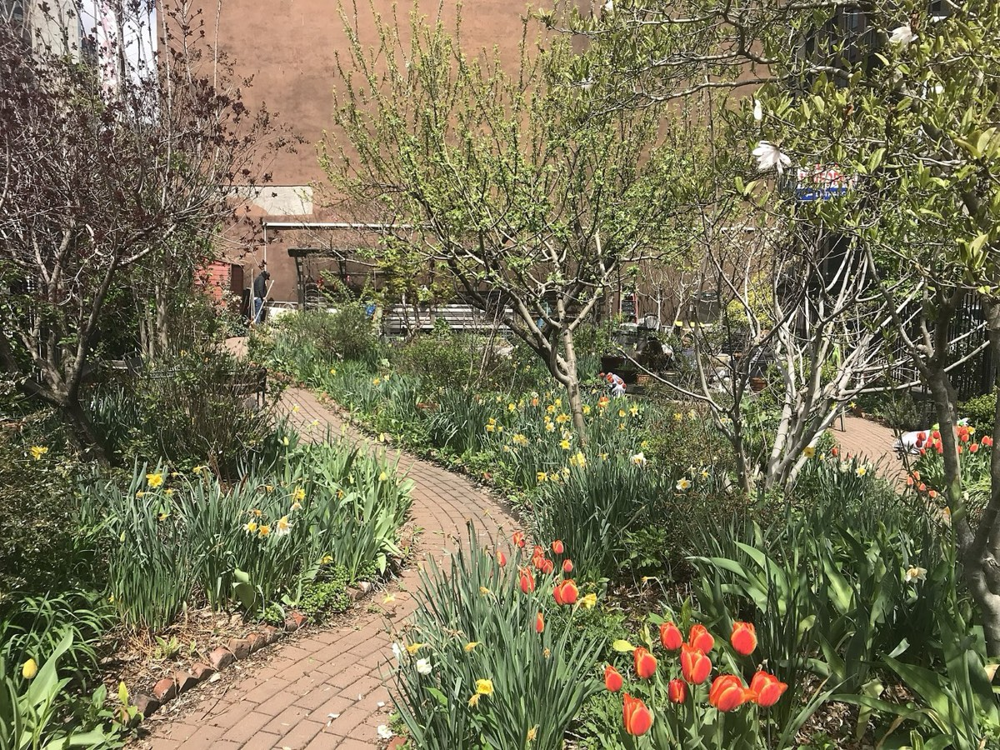
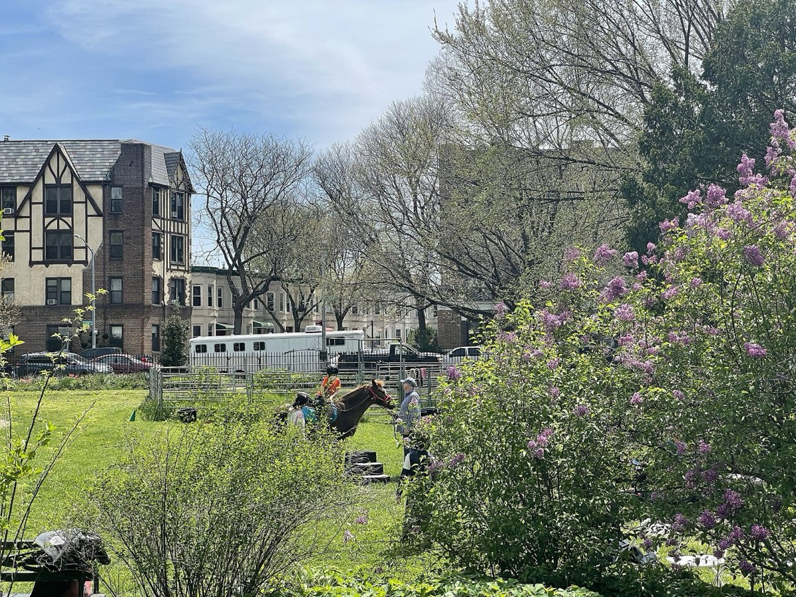
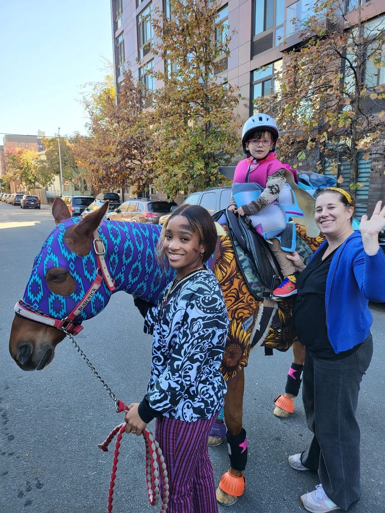

Photo credits
Most photographs on this site come from Wikimedia Commons and are used under the licenses listed below. Public-domain images are courtesy of the Library of Congress and other collections. Select a title to see the original file and its full license.
-

Helping Hoof Initiative — overview (riding for everyone)
A horse, friend 170318-A-ZG886-251
By Maj. Michelle Lunato, Public domain
-

Helping Hoof Initiative — programs (stable to garden)
Brooklyn Bears Community Garden5
By Wil540 art, CC BY-SA 4.0
-

Helping Hoof Initiative — overview (therapy & learning)
Veterans build resiliency through equine assisted therapy (4244875)
By U.S. Air Force 310SW by Staff Sgt. Laura Turner, Public domain
-

-
Helping Hoof Initiative — programs (horse parade)
Prospect Park td (2019-01-27) 003 - Park Circle, Horse Tamers
By Tdorante10, CC BY-SA 4.0
-

Helping Hoof Initiative — overview (safe streets & trails)
A view in Prospect Park, Brooklyn, New York City LCCN96512472
By Library of Congress Prints and Photographs Division, Public domain
-

Helping Hoof Initiative — overview (second-career horses)
-mypubliclandsroadtrip 2016- Get Outdoors Baby, Meadowood Special Recreation Area (28782293480)
By mypubliclands, Public domain
-

-

Helping Hoof Initiative — programs (therapeutic riding)
05 01 2022 horseback riding Gallop NYC Bowling Green and Cottage Brooklyn
By Wil540 art, CC BY-SA 4.0
-

Helping Hoof Initiative — heritage
Vast crowd of trucks and horse-drawn carts at the Wallabout Market, Brooklyn, N.Y.
By Al Aumuller, New York World-Telegram & Sun (Library of Congress), Public domain
-

Helping Hoof Initiative — programs (youth programs)
Pony ride at Prospect Park Stable
Courtesy of Be Brooklyn Equine (site photo)